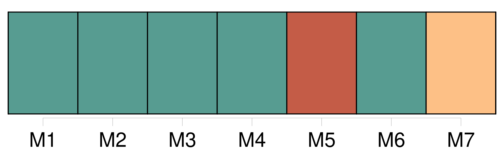
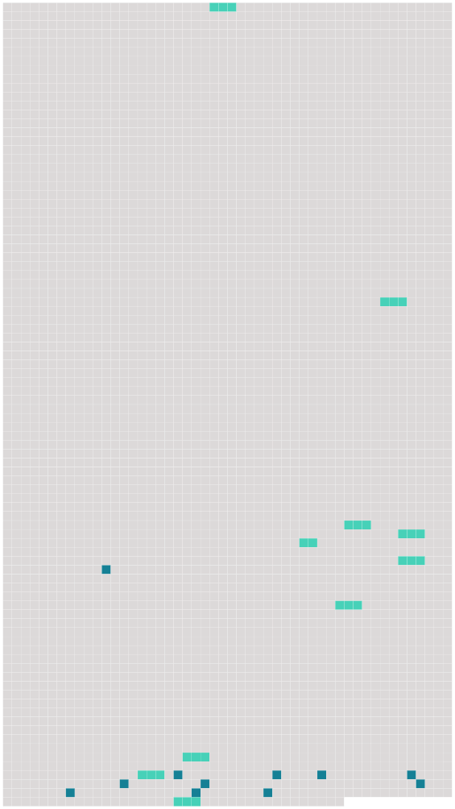

Longueur nb maillons : 21 mentions |
 |
L'appartement du Roi est meublé de damas vert, couleur de rose et blanc et orné de belles glaces ; celui de [Mme du Baril] est le plus joli de tous, il a un damas couleur de rose et blanc. [80 phrases]
Dans ce temps -là, on n'y allait pas tout voir en une après-midi comme aujourd'hui ; c'est qu'il y avait, en plus du Palais à visiter, ses habitants qui se trouvaient être un Louis XV, une dauphine qui s'appelait Marie-Antoinette, accompagnés de toute leur famille, sans oublier [Mme Du Barry] [72 phrases] L'appartement de [Mme du Baril] est galant. [1 phrases] « Entre la chambre du Roi et celle de [Mme du Baril] , il y a un cabinet de marbre blanc, fort bien sculpté. [1 phrases] C'est là où le Roi et [sa maîtresse] vont déjeuner. [8 phrases] L'appartement de [Mme du Barri] est charmant, dans toutes les maisons royales que j'ai vues, le [sien] est le plus élégant. [9 phrases] Louis 15 l'a achetée et l'a donnée à [Mme du Baril] [43 phrases]
« Le Roi dîne toujours en particulier avec [Mme du Baril] [4 phrases] En passant sur la place d'armes nous rencontrâmes [Mme du Bari] dans [son] carrosse avec Mme de Montmorenci et Mme de Rose. [Elle] est extrêmement jolie, [elle] était en habit de cheval, ouvert devant. [Son] carrosse est des plus élégans, bleu avec des moulures d'argent et de belles peintures. [Ses] laquais sont en bleu galonnés d'argent. [Ses] six chevaux sont lestes et fringans, ils sont isabelles et les brides, harnais, etc. [1 phrases] [Elle] est extrêmement haïe à Paris et à Versailles, on [lui] attribue tout le mal qui arrive en France, et on dit qu' [elle] est d'une très basse naissance et [dépense] prodigieusement au Roi.
Le Roi est aussi fort haï de ses sujets, soit à cause de sa faiblesse, soit à cause des mauvais ministres qu'il a choisis ou des grandes dépenses qu'il fait pour [Mme du Baril] , mais par contre le Dauphin et la Dauphine sont chéris de tout le monde. |
 |
Il est possible de télécharger la ressource sur la page Ortolang |
Si vous avez des questions ou vous voyez des erreurs, merci d'envoyer un mail à silvia.federzoni89@gmail.com |